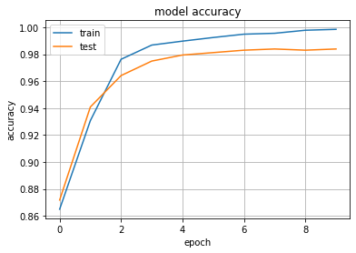
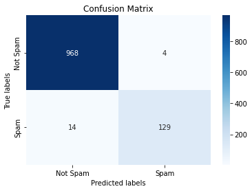

SPAM detection - MKD¶
Importing libraries:
import pandas as pd
import re
import string
import numpy as np
from sklearn.feature_extraction.stop_words import ENGLISH_STOP_WORDS
Read dataset and mount google drive:
data = pd.read_csv("/content/drive/MyDrive/Spam_detection/spam2.csv",encoding = "'latin'")
from google.colab import drive
drive.mount('/content/drive')
Mounted at /content/drive
data.head()
| v1 | v2 | Unnamed: 2 | Unnamed: 3 | Unnamed: 4 | |
|---|---|---|---|---|---|
| 0 | ham | Go until jurong point, crazy.. Available only ... | NaN | NaN | NaN |
| 1 | ham | Ok lar... Joking wif u oni... | NaN | NaN | NaN |
| 2 | spam | Free entry in 2 a wkly comp to win FA Cup fina... | NaN | NaN | NaN |
| 3 | ham | U dun say so early hor... U c already then say... | NaN | NaN | NaN |
| 4 | ham | Nah I don't think he goes to usf, he lives aro... | NaN | NaN | NaN |
data["text"] = data.v2
data["spam"] = data.v1
1. Splitting data¶
from sklearn.model_selection import train_test_split
emails_train, emails_test, target_train, target_test = train_test_split(data.text,data.spam,test_size = 0.2) # 80-20
data.info
<bound method DataFrame.info of v1 ... spam
0 ham ... ham
1 ham ... ham
2 spam ... spam
3 ham ... ham
4 ham ... ham
... ... ... ...
5567 spam ... spam
5568 ham ... ham
5569 ham ... ham
5570 ham ... ham
5571 ham ... ham
[5572 rows x 7 columns]>
emails_train.shape
(4457,)
2. Preprocessing¶
Python functions for cleaning text:
def remove_hyperlink(word):
return re.sub(r"http\S+", "", word)
def to_lower(word):
result = word.lower()
return result
def remove_number(word):
result = re.sub(r'\d+', '', word)
return result
def remove_punctuation(word):
result = word.translate(str.maketrans(dict.fromkeys(string.punctuation)))
return result
def remove_whitespace(word):
result = word.strip()
return result
def replace_newline(word):
return word.replace('\n','')
def clean_up_pipeline(sentence):
cleaning_utils = [remove_hyperlink,
replace_newline,
to_lower,
remove_number,
remove_punctuation,remove_whitespace]
for o in cleaning_utils:
sentence = o(sentence)
return sentence
x_train = [clean_up_pipeline(o) for o in emails_train]
x_test = [clean_up_pipeline(o) for o in emails_test]
# x_train[0]
Load LabelEncoder and fit/transform the data:
from sklearn.preprocessing import LabelEncoder
le = LabelEncoder()
train_y = le.fit_transform(target_train.values)
test_y = le.transform(target_test.values)
train_y
array([0, 0, 0, ..., 0, 0, 0])
3. Tokenize¶
## some config values
embed_size = 100 # how big is each word vector
max_feature = 50000 # how many unique words to use (i.e num rows in embedding vector)
max_len = 2000 # max number of words in a question to use
from keras.preprocessing.text import Tokenizer
tokenizer = Tokenizer(num_words=max_feature)
tokenizer.fit_on_texts(x_train)
x_train_features = np.array(tokenizer.texts_to_sequences(x_train))
x_test_features = np.array(tokenizer.texts_to_sequences(x_test))
x_train_features[0]
4. Padding¶
from keras.preprocessing.sequence import pad_sequences
x_train_features = pad_sequences(x_train_features,maxlen=max_len)
x_test_features = pad_sequences(x_test_features,maxlen=max_len)
x_train_features[0]
array([ 0, 0, 0, ..., 3496, 3, 104], dtype=int32)
5. Model¶
Load models:
from keras.layers import Dense, Input, LSTM, Embedding, Dropout, Activation
from keras.layers import Bidirectional
from keras.models import Model
# create the model
import tensorflow as tf
embedding_vecor_length = 32
model = tf.keras.Sequential()
model.add(Embedding(max_feature, embedding_vecor_length, input_length=max_len))
model.add(Bidirectional(tf.keras.layers.LSTM(64)))
model.add(Dense(16, activation='relu'))
model.add(Dropout(0.1))
model.add(Dense(1, activation='sigmoid'))
model.compile(loss='binary_crossentropy', optimizer='adam', metrics=['accuracy'])
print(model.summary())
Model: "sequential"
_________________________________________________________________
Layer (type) Output Shape Param #
=================================================================
embedding (Embedding) (None, 2000, 32) 1600000
_________________________________________________________________
bidirectional (Bidirectional (None, 128) 49664
_________________________________________________________________
dense (Dense) (None, 16) 2064
_________________________________________________________________
dropout (Dropout) (None, 16) 0
_________________________________________________________________
dense_1 (Dense) (None, 1) 17
=================================================================
Total params: 1,651,745
Trainable params: 1,651,745
Non-trainable params: 0
_________________________________________________________________
None
history = model.fit(x_train_features, train_y, batch_size=512, epochs=10, validation_data=(x_test_features, test_y))
Epoch 1/10
9/9 [==============================] - 184s 21s/step - loss: 0.3043 - accuracy: 0.8649 - val_loss: 0.2385 - val_accuracy: 0.8717
Epoch 2/10
9/9 [==============================] - 182s 21s/step - loss: 0.1837 - accuracy: 0.9307 - val_loss: 0.1763 - val_accuracy: 0.9408
Epoch 3/10
9/9 [==============================] - 180s 20s/step - loss: 0.1048 - accuracy: 0.9762 - val_loss: 0.1160 - val_accuracy: 0.9641
Epoch 4/10
9/9 [==============================] - 179s 20s/step - loss: 0.0630 - accuracy: 0.9868 - val_loss: 0.0887 - val_accuracy: 0.9749
Epoch 5/10
9/9 [==============================] - 183s 20s/step - loss: 0.0449 - accuracy: 0.9897 - val_loss: 0.0687 - val_accuracy: 0.9794
Epoch 6/10
9/9 [==============================] - 175s 20s/step - loss: 0.0321 - accuracy: 0.9924 - val_loss: 0.0603 - val_accuracy: 0.9812
Epoch 7/10
9/9 [==============================] - 164s 18s/step - loss: 0.0221 - accuracy: 0.9948 - val_loss: 0.0587 - val_accuracy: 0.9830
Epoch 8/10
9/9 [==============================] - 163s 18s/step - loss: 0.0185 - accuracy: 0.9955 - val_loss: 0.0659 - val_accuracy: 0.9839
Epoch 9/10
9/9 [==============================] - 153s 17s/step - loss: 0.0132 - accuracy: 0.9978 - val_loss: 0.0775 - val_accuracy: 0.9830
Epoch 10/10
9/9 [==============================] - 158s 18s/step - loss: 0.0090 - accuracy: 0.9984 - val_loss: 0.0673 - val_accuracy: 0.9839
from matplotlib import pyplot as plt
plt.plot(history.history['accuracy'])
plt.plot(history.history['val_accuracy'])
plt.title('model accuracy')
plt.ylabel('accuracy')
plt.xlabel('epoch')
plt.legend(['train', 'test'], loc='upper left')
plt.grid()
plt.show()

y_predict = [1 if o>0.5 else 0 for o in model.predict(x_test_features)]
y_predict
cf_matrix =confusion_matrix(test_y,y_predict)
Confusion matrix:
import seaborn as sns
import matplotlib.pyplot as plt
ax= plt.subplot()
sns.heatmap(cf_matrix, annot=True, ax = ax,cmap='Blues',fmt=''); #annot=True to annotate cells
# labels, title and ticks
ax.set_xlabel('Predicted labels');
ax.set_ylabel('True labels');
ax.set_title('Confusion Matrix');
ax.xaxis.set_ticklabels(['Not Spam', 'Spam']); ax.yaxis.set_ticklabels(['Not Spam', 'Spam']);

Metrics (Precision, Recall, F1 score):
from sklearn.metrics import confusion_matrix,f1_score, precision_score,recall_score
tn, fp, fn, tp = confusion_matrix(test_y,y_predict).ravel()
print("Precision: {:.2f}%".format(100 * precision_score(test_y, y_predict)))
print("Recall: {:.2f}%".format(100 * recall_score(test_y, y_predict)))
print("F1 Score: {:.2f}%".format(100 * f1_score(test_y,y_predict)))
Precision: 96.99%
Recall: 90.21%
F1 Score: 93.48%
np.round(f1_score(test_y,y_predict), 3)
0.935
6. Predict Macedonian mail¶
Install Google API translator with pip and load MKD language:
!pip install googletrans
!pip uninstall googletrans
!pip install googletrans==3.1.0a0
from googletrans import Translator, constants
from pprint import pprint
# init the Google API translator
translator = Translator()
# print all available languages
print("Total supported languages:", len(constants.LANGUAGES))
print("Languages:")
pprint(constants.LANGUAGES) # Long list
Test on Macedonian mail:
mk_mail = "Не, мислам дека не оди кај нас, сепак живее овде"
translation = translator.translate(mk_mail, src="mk")
print(f"{translation.origin} ({translation.src}) --> {translation.text} ({translation.dest})")
Не, мислам дека не оди кај нас, сепак живее овде (mk) --> No, I don't think he goes to us, he still lives here (en)
text_mkd = [translation.text]
text_mkd
["No, I don't think he goes to us, he still lives here"]
ynew = model.predict(np.array(tokenizer.texts_to_sequences(text_mkd))) # 0 или 1
text = "Spam" if np.round(ynew[0][0]) == 1 else "Not spam"
print(f"My sample mail was:\n\n-----------{text}-----------")
My sample mail was:
-----------Not spam-----------